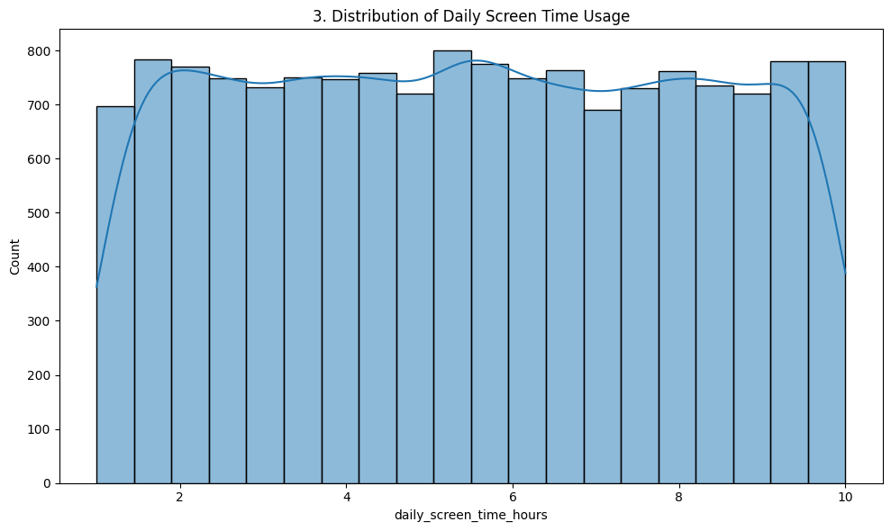
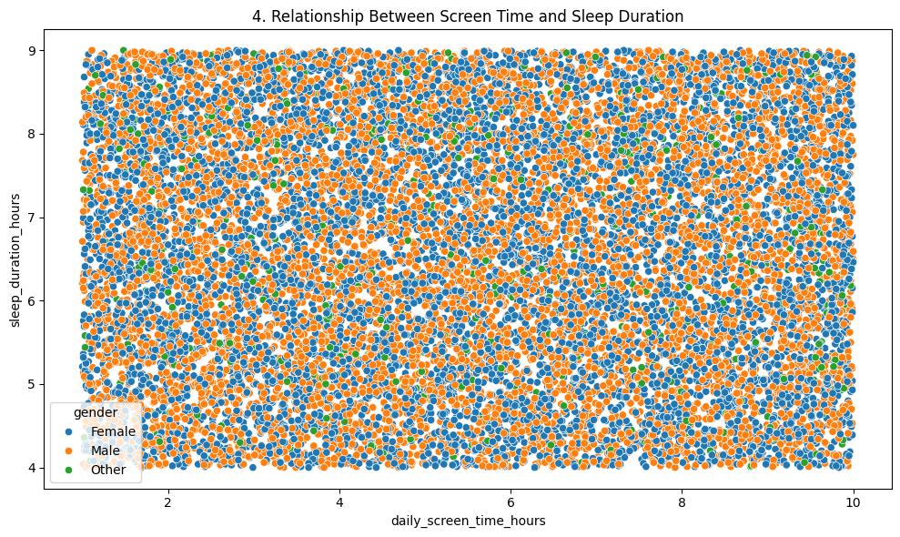
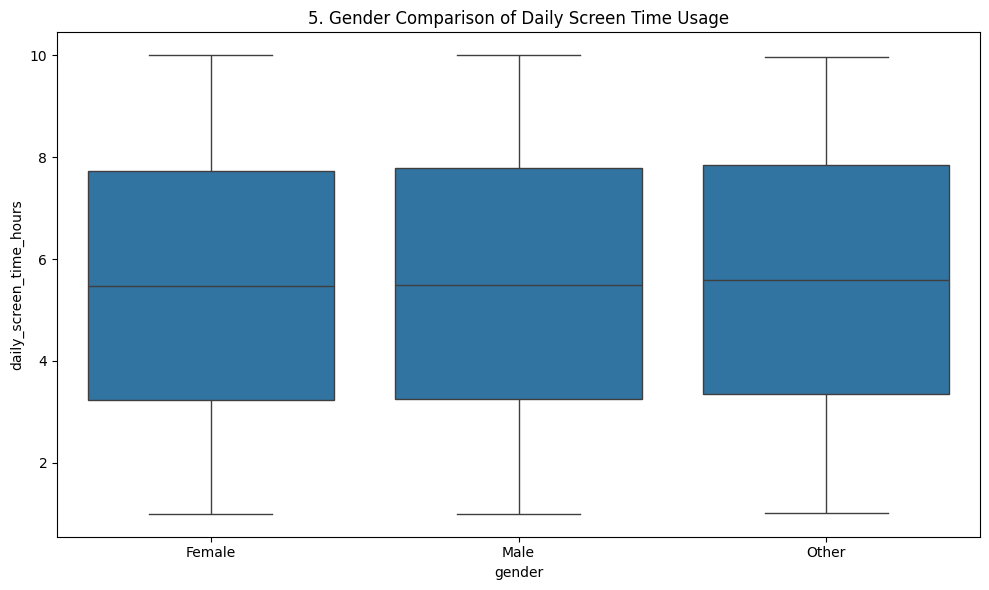
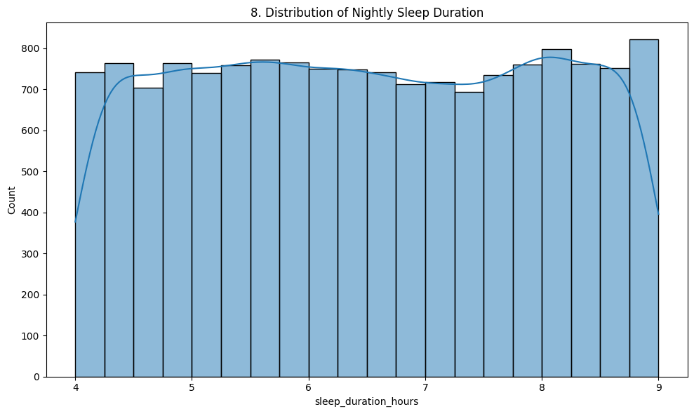
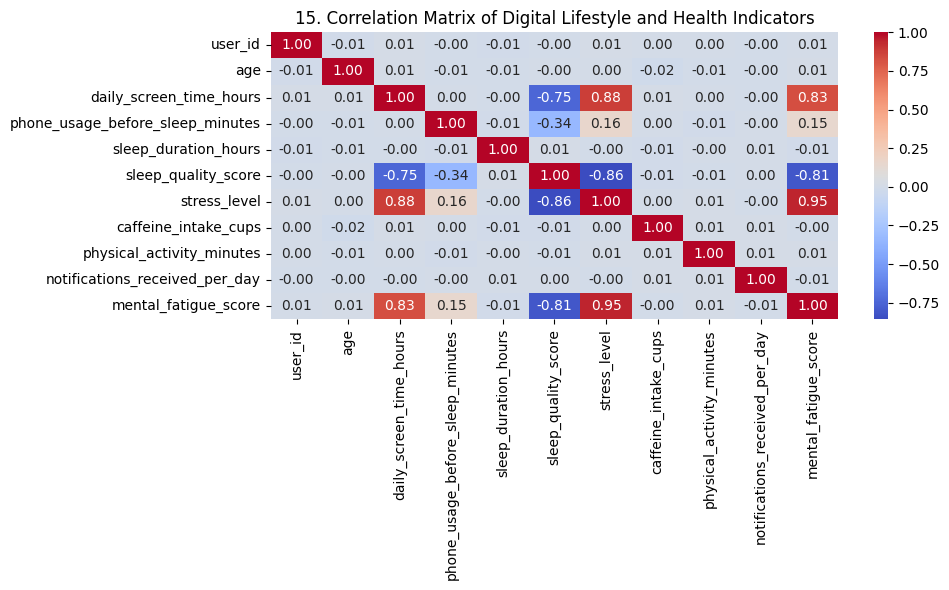

The Relationship Between Screen Time and Sleep Quality Among Students
Exploring how daily technology use may relate to sleep duration and sleep quality among students.
Research Problem
Smartphones, computers, tablets, televisions, and gaming systems have become major parts of students’ everyday lives.
Across modern university campuses, digital displays are involved in virtually every daily routine. Students continuously interact with screens for diverse academic, vocational, and personal activities:
The Impact of Nighttime Screen Use
High amounts of screen use, particularly near bedtime, may be associated with later bedtimes, shorter sleep duration, and poorer sleep quality. Exposure to screen lighting and high-stimulation digital media before sleep can disrupt natural circadian rhythms and interfere with restful sleep.
Why This Issue Matters for College Students
Sleep is foundational to overall student well-being and academic achievement. Inadequate or disrupted sleep directly influences:
Research Questions
“How does daily screen time relate to sleep quality among college students?”
Sub-Questions
Do students with higher daily screen time report fewer hours of sleep?
Is screen use before bedtime associated with poorer sleep quality?
Does the type of screen activity, such as gaming, studying, streaming, or social media, relate differently to sleep?
Is higher screen time associated with later bedtimes?
Is sleep quality associated with students’ academic performance?
Research Variables
Independent Variables
PredictorFactors measuring students’ daily and nighttime digital technology usage.
- Daily screen time
- Nighttime screen time
- Screen time before bed
- Social media usage
- Gaming time
- Streaming time
- Educational screen time
Dependent Variables
OutcomeIndicators reflecting students’ sleep patterns, duration, and overall restfulness.
- Sleep duration
- Sleep quality
- Bedtime
- Wake-up time
- Number of nighttime awakenings
- Daytime tiredness
Additional Factors
CovariatesThese variables may also influence the relationship between screen time and sleep, acting as potential moderating or confounding factors:
Research Hypotheses
Students with higher daily screen time will report lower sleep quality than students with lower daily screen time.
Students who spend more time using screens before bed will report shorter average sleep duration.
Students with greater nighttime screen use will report later average bedtimes.
Dataset
Dataset Description
The selected Kaggle dataset contains 15,000 records and 13 variables describing digital habits and health-related indicators. Participants range from ages 18 to 59. Key measures include daily screen time, phone use before sleep, sleep duration, sleep quality, stress level, caffeine intake, physical activity, daily notifications, and mental fatigue.
Key Variables From Dataset
Field MappingThis section will list and define the exact data fields extracted from the Kaggle dataset once chosen.
Data Analysis
Preliminary exploratory analysis of the Kaggle dataset. The visualizations below summarize screen use, sleep patterns, and relationships among the measured variables.
Screen Time Distribution

Daily screen time averages about 5.50 hours in the dataset, with values ranging from 1 to 10 hours.
Screen Time vs. Sleep Duration

This scatter plot compares daily screen-time hours with nightly sleep duration and separates observations by gender.
Screen Time by Gender

This box plot compares the distribution of daily screen-time usage across gender categories.
Nightly Sleep Duration

Average nightly sleep duration is about 6.51 hours, with observations ranging from 4 to 9 hours.
Correlation Matrix

The correlation matrix provides an overview of the linear relationships among the dataset's numeric digital-lifestyle and health indicators.
Preliminary Descriptive Statistics
These descriptive values come directly from the uploaded Kaggle notebook and provide context for interpreting the preliminary visualizations.
About This Project
Project Purpose & Scope
This project investigates whether students’ technology habits are associated with differences in sleep duration and sleep quality using data analysis.
Through empirical analysis of student screen usage patterns across academic, leisure, and pre-bedtime contexts, this research aims to identify meaningful relationships that can inform healthy technology habits and support overall student health and academic success.